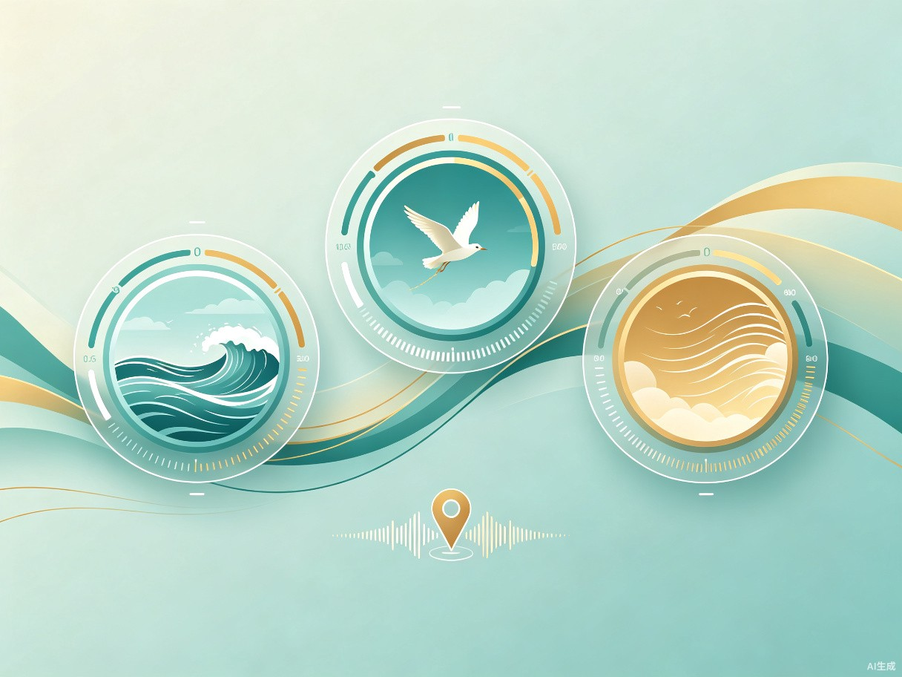

创意介绍
我的爸爸最近开始听白噪音工作，他发现 QQ 音乐上没有他想要的有海鸥叫声的海浪白噪音。于是我想要做一款 APP，让所有人都可以自己混出或者录制喜欢的休息 / 工作 / 助眠白噪音。
Cobbl 的核心理念是"声音共创"——不只是被动地听，而是主动地调制属于自己的声景。无论是专注工作、放松身心，还是安然入眠，每个人都能在 Cobbl 中找到或创造出最适合自己的声音配方。
核心功能

🧠
情绪感知
分析用户目前状态（压力 / 焦虑等水平），将看不见的紧张与疲惫可视化，让用户对自己的精神状态一目了然，从而实现更有意识的自我调节。
🎵
推荐算法
基于用户的历史偏好与实时状态分析，动态生成最适合当下的"声音处方"。创作混音时，系统实时给出专业声学配比建议，确保每次放松都是科学的、有效的。
🗺️
声音地图
用户可上传音频，标记地点声音。你可以聆听全世界的声音，也可以建立自己专属的声音地图，如"复旦大学声音地图"，让记忆与声音相连。
目标用户与痛点
Cobbl 面向所有想放松、想要专注、感到焦虑的人。基于神经科学原理，APP 可降低大脑前额叶皮层的兴奋性，帮助用户更快进入心流专注或放松状态。
核心痛点
- 01 越努力越焦躁 学习或工作时，越想集中注意力，周围的噪音就越被放大，导致效率低下、心情烦躁。
- 02 睡不着 身体很累，大脑却还在不停运行，焦虑水平居高不下，辗转难眠。
- 03 想借助工具却无从下手 尝试过听白噪音，但在海量曲库里大海捞针，找不到那个"刚好对味"的声音；或者循环播放同一首，很快就腻了、免疫了，反而成了新的干扰。
价值与意义
社会价值 · 声音共创社区
Cobbl 是一个由用户驱动的、自生长的声景图书馆。专属声音地图可增强个人归属感，每位用户的独特发现都能成为治愈他人的良药，传播温暖，减少孤独感。
社会价值 · 缓解焦虑
基于神经科学原理，为用户提供有科学依据的声音干预方案，缓解用户焦虑，促进社会心理健康与发展。
环境价值 · 唤醒自然保护意识
核心声音素材多源于自然环境。当用户每天沉浸在这些自然声景中时，与自然的情感连接会被不断强化，将日常的放松行为转化为环保意识的潜移默化。
让声音成为治愈的处方
Cobbl 相信，最好的白噪音不是算法推荐的"标准答案"，而是你自己调制的专属配方。在这里，每一次聆听都是一次创造，每一个声音都可能温暖一个陌生人。